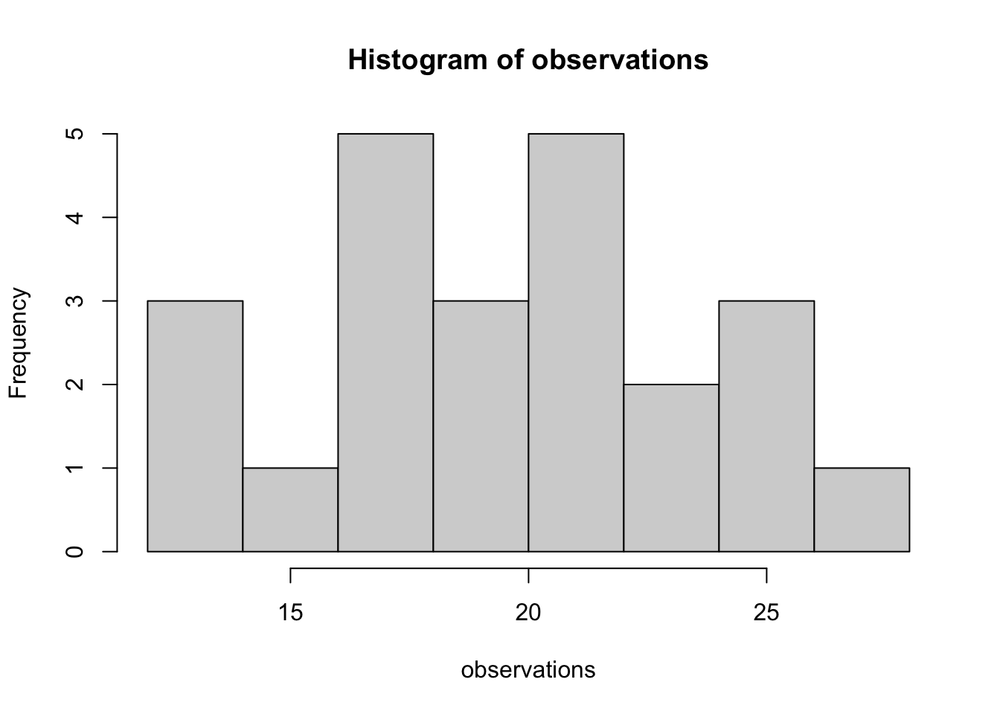

n_people <- 23
observations <- rpois(n_people, lambda = 20)
hist(observations)
Expressing yourself through made-up numbers.
Why would you want to? there are a few good reasons:
Let’s start by simulating a simple dataset with one parameter: the number of birds each of us is going to see on a hike today.
What kind of numbers do we expect to get? what is a reasonable limit to how many we would see?
let’s simulate from a poisson distribution. As you probably know, the poisson in R is just rpois. Every statistical distribution that is in R (which is a lot! almost all! ) has four functions. For a distribution called dist, they are:
rdist = the distribution functionsqdist = the quantile functionspdist = the probability density functionddist the density functionLet’s begin by simulating data in R
We can do the same process in the programming language Stan
This is cmdstanr version 0.5.3- CmdStanR documentation and vignettes: mc-stan.org/cmdstanr- CmdStan path: /Users/amacdonald/.cmdstan/cmdstan-2.31.0- CmdStan version: 2.31.0
A newer version of CmdStan is available. See ?install_cmdstan() to install it.
To disable this check set option or environment variable CMDSTANR_NO_VER_CHECK=TRUE.Running MCMC with 4 sequential chains...
Chain 1 Iteration: 1 / 1000 [ 0%] (Sampling)
Chain 1 Iteration: 100 / 1000 [ 10%] (Sampling)
Chain 1 Iteration: 200 / 1000 [ 20%] (Sampling)
Chain 1 Iteration: 300 / 1000 [ 30%] (Sampling)
Chain 1 Iteration: 400 / 1000 [ 40%] (Sampling)
Chain 1 Iteration: 500 / 1000 [ 50%] (Sampling)
Chain 1 Iteration: 600 / 1000 [ 60%] (Sampling)
Chain 1 Iteration: 700 / 1000 [ 70%] (Sampling)
Chain 1 Iteration: 800 / 1000 [ 80%] (Sampling)
Chain 1 Iteration: 900 / 1000 [ 90%] (Sampling)
Chain 1 Iteration: 1000 / 1000 [100%] (Sampling)
Chain 1 finished in 0.0 seconds.
Chain 2 Iteration: 1 / 1000 [ 0%] (Sampling)
Chain 2 Iteration: 100 / 1000 [ 10%] (Sampling)
Chain 2 Iteration: 200 / 1000 [ 20%] (Sampling)
Chain 2 Iteration: 300 / 1000 [ 30%] (Sampling)
Chain 2 Iteration: 400 / 1000 [ 40%] (Sampling)
Chain 2 Iteration: 500 / 1000 [ 50%] (Sampling)
Chain 2 Iteration: 600 / 1000 [ 60%] (Sampling)
Chain 2 Iteration: 700 / 1000 [ 70%] (Sampling)
Chain 2 Iteration: 800 / 1000 [ 80%] (Sampling)
Chain 2 Iteration: 900 / 1000 [ 90%] (Sampling)
Chain 2 Iteration: 1000 / 1000 [100%] (Sampling)
Chain 2 finished in 0.0 seconds.
Chain 3 Iteration: 1 / 1000 [ 0%] (Sampling)
Chain 3 Iteration: 100 / 1000 [ 10%] (Sampling)
Chain 3 Iteration: 200 / 1000 [ 20%] (Sampling)
Chain 3 Iteration: 300 / 1000 [ 30%] (Sampling)
Chain 3 Iteration: 400 / 1000 [ 40%] (Sampling)
Chain 3 Iteration: 500 / 1000 [ 50%] (Sampling)
Chain 3 Iteration: 600 / 1000 [ 60%] (Sampling)
Chain 3 Iteration: 700 / 1000 [ 70%] (Sampling)
Chain 3 Iteration: 800 / 1000 [ 80%] (Sampling)
Chain 3 Iteration: 900 / 1000 [ 90%] (Sampling)
Chain 3 Iteration: 1000 / 1000 [100%] (Sampling)
Chain 3 finished in 0.0 seconds.
Chain 4 Iteration: 1 / 1000 [ 0%] (Sampling)
Chain 4 Iteration: 100 / 1000 [ 10%] (Sampling)
Chain 4 Iteration: 200 / 1000 [ 20%] (Sampling)
Chain 4 Iteration: 300 / 1000 [ 30%] (Sampling)
Chain 4 Iteration: 400 / 1000 [ 40%] (Sampling)
Chain 4 Iteration: 500 / 1000 [ 50%] (Sampling)
Chain 4 Iteration: 600 / 1000 [ 60%] (Sampling)
Chain 4 Iteration: 700 / 1000 [ 70%] (Sampling)
Chain 4 Iteration: 800 / 1000 [ 80%] (Sampling)
Chain 4 Iteration: 900 / 1000 [ 90%] (Sampling)
Chain 4 Iteration: 1000 / 1000 [100%] (Sampling)
Chain 4 finished in 0.0 seconds.
All 4 chains finished successfully.
Mean chain execution time: 0.0 seconds.
Total execution time: 0.6 seconds. variable mean median sd mad q5 q95 rhat ess_bulk ess_tail
observations[1] 19.50 19.00 4.44 4.45 13.00 27.00 1.00 3717 3780
observations[2] 19.60 19.00 4.49 4.45 13.00 27.00 1.00 3866 3788
observations[3] 19.47 19.00 4.42 4.45 12.00 27.00 1.00 3845 3669
observations[4] 19.57 19.00 4.37 4.45 13.00 27.00 1.00 3968 3943
observations[5] 19.43 19.00 4.42 4.45 13.00 27.00 1.00 4008 3950
observations[6] 19.50 19.00 4.40 4.45 13.00 27.00 1.00 3991 3820
observations[7] 19.50 19.00 4.43 4.45 13.00 27.00 1.00 3971 3947
observations[8] 19.59 19.00 4.33 4.45 13.00 27.00 1.00 4057 3956
observations[9] 19.55 19.00 4.40 4.45 13.00 27.00 1.00 3980 4031
observations[10] 19.51 19.00 4.32 4.45 13.00 27.00 1.00 3932 4028
# showing 10 of 23 rows (change via 'max_rows' argument or 'cmdstanr_max_rows' option)Now we can move on to the second step outlined above: we can just fit the same data to our model, vice versa, and see if we can recover that parameter.
In R, there are several ways to do it: first, we can use R do it in two ways: fitdistr, and glm.
Then we do the same thing in Stan.
Then we look to see if we have recovered our parameter.
The next steop in visualization, which we also do with this simple model.
---
title: "Data simulation"
description: |
Expressing yourself through made-up numbers.
execute:
freeze: true
format:
html:
code-tools: true
---
## Why simulate data?
Why would you want to? there are a few good reasons:
1. Understand your priors. By simulating data from a model we get an idea of what priors actually mean scientifically. With all but the simplest models, this is essential
2. Demonstrate your understanding of the model. If you can't simulate data from a model, you probably don't understand it!
3. Validate that the model works correctly. If you can recover parameters when you know the truth, then we have more confidence that it will work correctly on real data.
## Watching for birds
Let's start by simulating a simple dataset with one parameter: the number of birds each of us is going to see on a hike today.
What kind of numbers do we expect to get? what is a reasonable limit to how many we would see?
### Simulation in R
let's simulate from a poisson distribution.
As you probably know, the poisson in R is just `rpois`.
Every statistical distribution that is in R (which is a lot! almost all! ) has four functions.
For a distribution called `dist`, they are:
* `rdist` = the distribution functions
* `qdist` = the quantile functions
* `pdist` = the probability density function
* `ddist` the density function
Let's begin by simulating data in R
```{r}
n_people <- 23
observations <- rpois(n_people, lambda = 20)
hist(observations)
```
We can do the same process in the programming language Stan
```{r}
#| class-output: stan
library(cmdstanr)
poisson_simulation <- cmdstan_model(stan_file = "topics/01_data_simulation/poisson_simulation.stan")
poisson_simulation
```
* compare and contrast the R and Stan formulations
* intro to Stan syntax
```{r}
poisson_simulation$sample(data = list(n_people = 23,
avg_observed = 19.5),
fixed_param = TRUE)
```
## Write down model
```{r}
```
## Fit model to a simulation
## learning how to plot a posterior
Now we can move on to the second step outlined above: we can just fit the same data to our model, vice versa, and see if we can recover that parameter.
## R based alternatives
In R, there are several ways to do it: first, we can use R do it in two ways: fitdistr, and glm.
Then we do the same thing in Stan.
Then we look to see if we have recovered our parameter.
The next steop in visualization, which we also do with this simple model.